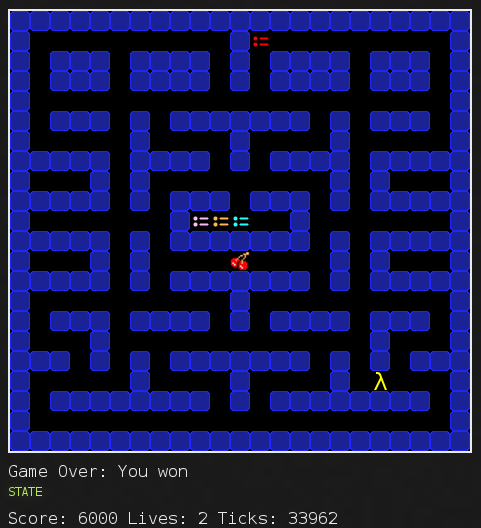

ICFPC2014 Write-up
From 2014/07/25 to 2014/07/28 (in Japan Standard Time) I participated in ICFPC2014 with @Mi_Sawa and @camypaper. Our team name is “Kokoro Pyon-pyon”, stands for lyrics of Japanese animation’s opening theme.
Our repository: https://github.com/osak/ICFPC2014

1st day
As soon as it got 21:00, I started to read the problem. The main problem was clear: writing the AI for Pacman. Of cource, since this is ICFPC, the whole problem would never be such simple.
Further investigation reveals that the AI should be written for strange architecture, named “GCC” and “GHC” (Hmm, I think I’ve heard those names somewhere else ;). I did not know “GCC” was so-called “SECD machine” at that time, though, rough surveillance into the specification was enough for me to see through that this is kind of a Lisp machine. It appearently seemed that writing assembly by hand is so hard and implementing Lisp on that machine is fairly reasonable, therefore, we decided to follow that way.
It was bit harder to understand detail of rules and specification of “GCC”, especially the behaviour of “RAP” and “TAP” instructions. When I recognize those details and implement just the parser of Scheme-like language (I named it “rabbit” and the compiler is “chino”, which stands for the charactor of the animation), it was already 4:00 and good time to sleep.
Parallel to me, @camypaper was creating a maze generator program in C#.
2nd day
I woke up at 11:00 and go straight to @camypaper’s house and hand in a book “Programming Gauche” to @Mi_Sawa. Discussing with @Mi_Sawa, I proceeded to implement compiler of Rabbit-lang, but got stucked in how to implement “let” operation. It seemed “RAP” instruction is capable to construct “let”, though, my implementation didn’t work so well. Googling around the web and use “Lisp machine RAP” as a query, finally I got to find out “GCC” was actually “SECD machine” and how to implement “let” and “letrec” in this architecture. Phew.
The lightning round was nearly over when my implementation was done. @Mi_Sawa was writing “GCC” assembly by hand and succeeded to produce pseudo-random number generator, so we decided to submit completely random walking AI for the lightning round.
After having a supper and taking some rest, we started to write AI in our Rabbit-lang and approached to additional tasks, that is, writing ghost AI. The ghost AI was run on “GHC” architecture, which seems like general 8-bit microprocessor. It seemed fairly ordinal architecture (remeber there was “GCC” at opposite side!), we can throw this task to @camypaper completely with providing simple preprocessor just to handle constants and labels (I named it “mofu” and compiler is “tippy”), to keep I and @Mi_Sawa focusing on “GCC”.
While I was fixing severe bug (related to self-recursive function) and improving Rabbit-lang compiler, @Mi_Sawa implemented binary tree on Rabbit-lang, and @camypaper wrote a ghost AI.
@Mi_Sawa said he was aiming to implement array as binary tree. He also said this method enables to perform breadth-first search. I agreed it is theoretically possible, but I doubted if it could be implemented correctly on this ad-hoc language.
3rd day
When I woke up at 11:30, @camypaper had been writing some code in Mofu-lang and reported a bug. My 3rd day was beginning with bug fix.
I was improving Rabbit-lang compiler such that it prints line number and context on error for several hours. Implementing compiler and improving tools for users are much interesting than writing AI for me. @Mi_Sawa was writing player AI and @camypaper was writing enemy AI.
After having a little late lunch (about 15:00), since major bug was almost fixed, I started to write my own AI. While I was writing the AI, @camypaper releases a ghost AI which traces player’s movement. Amazing. Several minutes later, then @Mi_Sawa achieved to implement breadth-first search on Rabbit-lang. Amaing again!
Spending some hours to debugging, my simple AI was finally complete. It was so simple that just seek four neighbors and goes to pill-containing cell. That’s all. Obviously @Mi_Sawa’s AI was much smarter, though we couldn’t confirm because JavaScript simulator was painfully slow (We hadn’t made simulator by own; we had thought JavaScript one is enough until at that time).
Almost same time, @camypaper’s ghost AI was ready. We felt little tired (because almost all time woken up was spent for ICFPC!), so we decided to submit our code at this time and finish today’s work.
4th day
In this day, I had lab meeting from morning to noon. Fortunately I didn’t have to talk most of the meeting, so I tried to code simulator in Ruby.
Working during the meeting and after that, the “GCC” simulator, named “rize”, was ready. Sequentially I wrote game simulator using “rize”, but when @Mi_Sawa’s code was tried on, it revealed Ruby is not so fast enough because at most 3M instructions were processed in just one turn. Why did I decided to implement this in Ruby? So stupid…
Remaining time was about only 6 hours (and I had had another meeting), so there was not enough time for reimplementing in C++. I started to improve my AI, but it was not worked well.
At one hour before contest finished, @Mi_Sawa made his AI clever enough to clear classic stage, and @camypaper’s ghost AI was also strong enough. So we decided to submit them as final submission.
Summary
Reading specification of machine and writing compiler was quite interesting, despite of first impression that writing Pacman AI on unfamilier architecture was painfully boring. Making support tools for team and improving according feedback was surely exciting. Though our rank will not be so high, the conest was worth enough to spending whole 72 hours. Thanks very much for ICFPC2014 organizers!